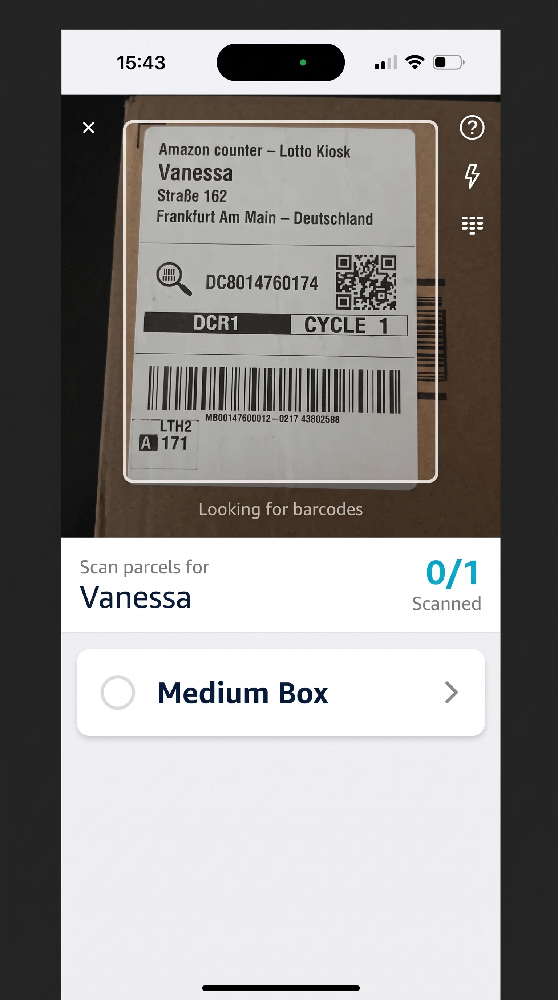

AMAZON PAKETSHOP
Wenige Schritte.
Ein zufriedener Kunde.
So einfach funktioniert die Paketabholung in Ihrem Geschäft.
Die Abholung erlebenProduktion: Die Ausgangsaufnahme von 26,5 bis 30 Sekunden fehlt noch. Dieser Bereich bleibt in den Exporten schwarz.
Ausgangsaufnahme ausstehend · 3,5 Sekunden
Die Videodatei konnte nicht geladen werden. Bitte Vorschau über den lokalen Server öffnen.
DIE ABHOLUNG IM ÜBERBLICK
Einfach. Persönlich. Erledigt.
- Amazon Hub App öffnen.
- Abholcode des Kunden scannen.
- Passendes Paket holen und Paketbarcode scannen.
- Abholung bestätigen und Paket persönlich übergeben.




IHR GESCHÄFT. MEHR MÖGLICHKEITEN.
Werden Sie Teil
der letzten Meile.
Jetzt Paketshop werden
Vorschau-Einstellungen und Produktionsstatus
Vorwärts und rückwärts scrollen oder den Zeitregler verwenden. Keine automatische Wiedergabe. Der Film enthält ausschließlich vorhandenes Material und unveränderte App-Screenshots.
Video wird geladen …
Offen: eine reale oder generierte Fortsetzung, in der die Kundin mit demselben Paket zum Ausgang geht und das Geschäft verlässt. Kein Generierungsauftrag gestartet.